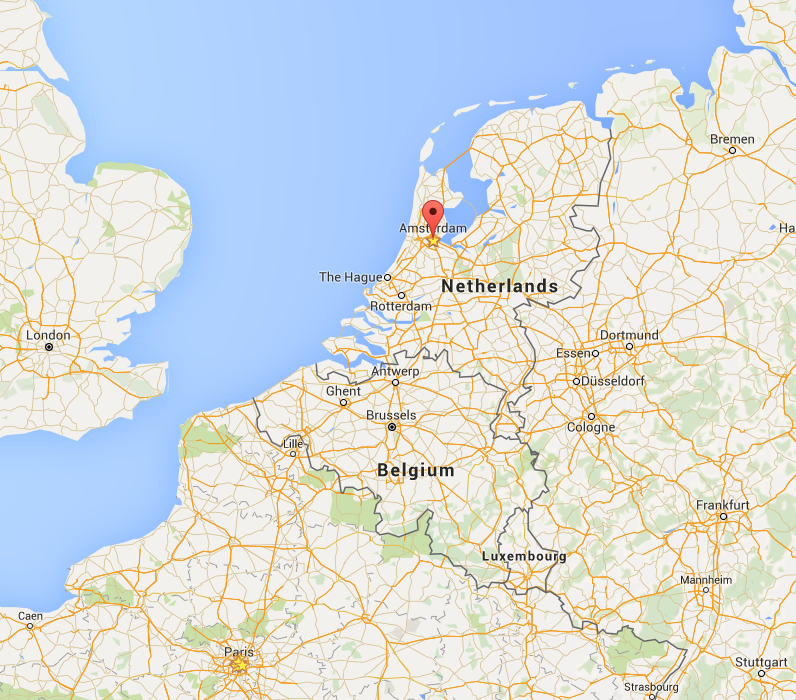
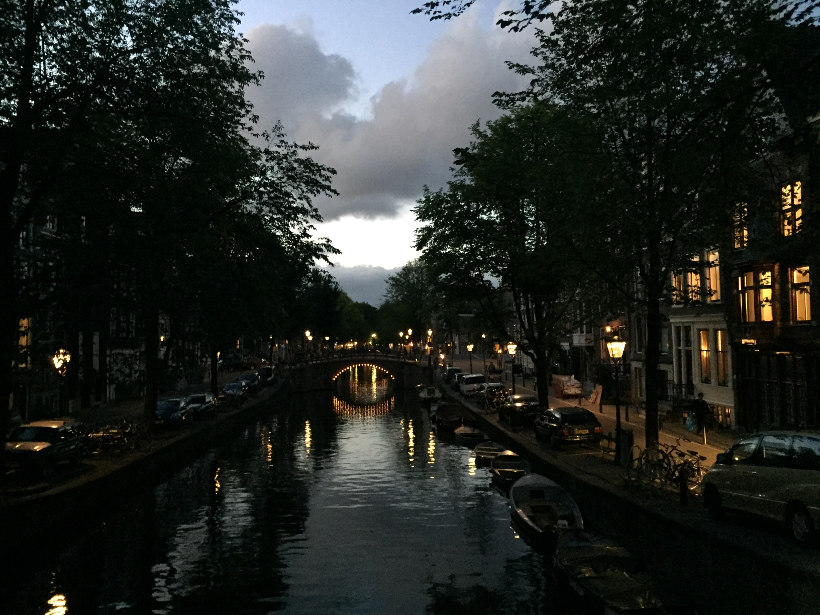
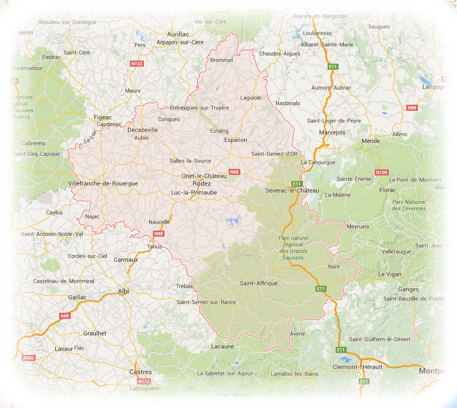
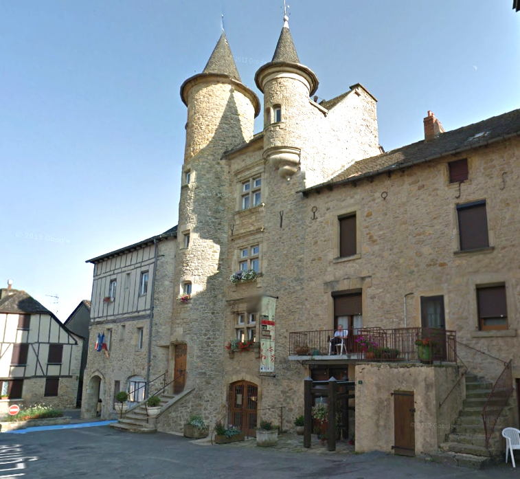
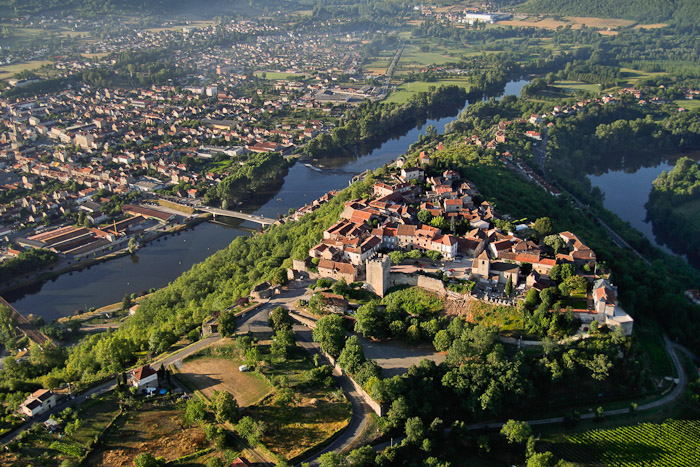

Ton navigateur n'est pas capable d'afficher ce site correctement :(
Tu devrais utiliser la dernière version de Chrome, Safari ou Firefox.
Vous connaissez Claire Rouanet ?
Vous connaissez Jérémy Laumon ?
Eh bien, ils se marient !
Un voyage à Amsterdam...

Un canal illuminé, une chemise, une jolie robe et un diamant...

Jérémy fait (enfin!) sa demande !
Une grosse fête arrive,
et ils ont envie que vous en fassiez partie !
Alors rendez-vous le 27 août 2016,
à 15h à la mairie de Montbazens,
en Aveyron !
Puis à la salle des fêtes de
Capdenac-le-haut pour la fiesta,
à partir de 18h.
Capdenac-le-haut
Montbazens

La mairie de Montbazens.

Puis direction Capdenac-le-haut pour les festivités.

Un vin d'honneur et un diner.